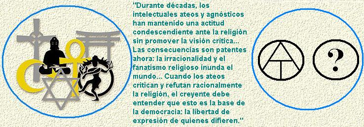

Durante décadas, los intelectuales ateos y agnósticos han mantenido una actitud condescendiente ante la religión. Se mantenía el escepticismo religioso como actitud personal sin promover la visión crítica: se podría llamar “el clóset” ateo. Las consecuencias son patentes ahora: la irracionalidad y el fanatismo religioso inunda el mundo y amenaza con un choque de civilizaciones, mientras corrientes retrógradas erosionan la ciencia y la democracia.
Doctrinas que enseñaban al oprimido a “someterse” porque “toda autoridad viene de Dios”; movimientos como el creacionismo 1 que buscan reemplazar la evolución científica con mitos bíblicos; fundamentalistas islámicos que adoctrinan sus seguidores para que se conviertan en terroristas suicidas; la ultraderecha norteamericana evangélica que lava el cerebro de los niños para que eliminen la separación entre la iglesia y el estado, con métodos de abuso infantil 2; ¡incluso fundamentalistas islámicos que marchan exigiendo la decapitación de quien dice que el Islam es una religión violenta!, todo esto muestra que cuando no se confronta la religión, esta avanza como un cáncer mental y social.
Ante este panorama alarmante, algunos intelectuales sobresalientes han tenido el coraje de salir del “clóset ateo” para mostrar que la religión es peligrosa porque:
Enseña a los ciudadanos a creer ciegamente en lo que se les dice.
Crear personas que se casan con ideas “por principio” sin cuestionar sus bases y consecuencias
Forja una ciudadanía que pone su felicidad en cuentos de hadas
Sataniza y reprime manifestaciones naturales de afecto y placer para volver a la población neurótica y proclive a la violencia. 3
Forma sectas que odian a quienes no se adhieren a ellas
Deteriora el pensamiento crítico a las nuevas generaciones, instilándoles ideas absurdas que deben aceptar por obligación paterna y por circunstancias geográficas
Fomenta actos violentos e incluso homicidas como respuestas a críticas argumentales.
Más aún, estos críticos modernos de la religión han desmontado todos los argumentos imaginables a favor de los monoteísmos modernos hasta dejar expuesta su falsedad. 4 Han mostrado los procesos cerebrales explican la religión como un fenómeno sin elementos sobrenaturales. 5 Han señalado el peligro intrínseco de la mentalidad religiosa para una democracia y una ética sana. 6
Los creyentes han respondido tildando a los críticos de “intolerantes”, “fanáticos”, “fascistas”… de ser una “nueva inquisición” encargada de perseguir a los creyentes. Incluso, de caricaturizar a la fe. ¿Es comparable la actitud atea moderna con los símiles que le hacen? ¿Son válidas estas acusaciones? 7
Es gracioso que los insultos de los creyentes irritados surjan de la historia de la fe: Los ateos modernos no han quemado mujeres por tildarlas de brujas; no han hecho guerras de exterminio contra musulmanes por creer en Muhammad; no han redactado “índices” de libros prohibidos so pena de expulsar de sus comunidades a los transgresores; no han fomentado la quema de textos con ideas “heréticas”; no han estancado durante mil años el avance científico de la humanidad por ir en contra de “Las Escrituras”; no han pasado a espada ni asado en la hoguera a etnias de ultramar por no aceptar el “Evangelio de Nuestro Señor Jesucristo”; no han mandado a asesinar escritores que hagan parodias de sus libros ni a caricaturistas que dibujen a sus personalidades; menos aún, no han firmado documentos que autorizan detonar dos bombas atómicas sobre población civil luego de encomendarse a Dios. 8
Comparar las críticas argumentales ateas contra la religión, con los genocidios religiosos contra “infieles” y “herejes”, muestra el deterioro cerebral que causa la fe. El creyente considera igual una crítica que un genocidio. No es de extrañarse; ya se han visto antes sus doble estándares: se aterran ante 5 millones de homicidios Nazis, pero consideran buena la destrucción mítica de la raza humana por Yahvé (excepto Noé & Cía.) o el genocidio de los moradores de Canaán por los sangrientos israelitas.
Los ateos modernos actúan en el plano de las ideas: señalan errores, falacias, y consecuencias adversas de la fe sin prohibirla; los ateos ven el error de los creyentes pero también les defienden su derecho expresar sus errores religiosos. Lo único que solicitan a cambio es que se les permita criticar libremente. Esta actitud es diametralmente opuesta a la de los creyentes que a lo largo de la historia han aplastado a espada y fuego las voces disidentes. Esto no es sólo historia medieval: los regímenes de Franco en España, de Pinochet en Chile, y de Bush en Estados Unidos muestran la terrible cercanía de este fenómeno.
Criticar o descalificar una idea no es un ataque ni un insulto a quien la respalda. Este error es una traba para un debate racional serio y fructífero, no sólo en religión sino en política. Valga una ilustración: Isaac Newton fue el primer unificador de la física al probar que las mismas leyes de movimiento rigen a los cuerpos celestes y terrestres; esto acabó con la filosofía aristotélica escolástica. No obstante, su mayor producción intelectual fue en Teología. Newton perdió años estudiando textos proféticos como Daniel y Apocalipsis con el fin de predecir la segunda venida de Cristo. Desde la óptica moderna, buena parte de la energía intelectual de Newton se desperdició en mitos infundados, pero decir que Newton perdió su tiempo con tonterías religiosas no equivale a decir que Newton era tonto, ya que tal vez fue el cerebro más grande de la historia 9. De igual forma, cuando los hechos señalan que el dios cristiano es genocida, el cristiano debe entender que no se le está atacando a él sino a su deidad.
Las palabras fuertes no son ideales en un debate; el autor de estas líneas tardó años en aprender esta dura lección y hoy día trata en lo posible de evitar los epítetos fuertes… pero a veces son necesarios. Es bueno aprender a diferenciar un ataque argumental de un ataque personal. Si se “saca callo” ante las agresiones verbales, y se mira la esencia de una crítica en vez de pegarse a la forma, tal vez se fortalezca la capacidad de diálogo y debate de nuestra sociedad.
Cuando los ateos critican y refutan racionalmente la religión, el creyente debe entender que esto es la base de la democracia: la libertad de expresión de quienes difieren. Eliminar la crítica es eliminar la democracia. Criticar no es intolerancia: prohibir la crítica o resentirse por ella sí lo es. La respuesta que debe dar un creyente ante ella no es indignarse por la blasfemia, ni rasgarse las vestiduras, ni exigir la cabeza de quienes “ofendieron a su profeta”: Debe REFUTAR RACIONALMENTE a sus adversarios en vez de tildarlos de “inquisidores”. Igualmente, debe reconocer que hay una gran diferencia entre el fanático que se ata dinamita al cinturón para volarse y matar a 10 personas o el inquisidor que manda a serruchar una persona en dos para hacerla abjurar de satán o el alto jerarca católico que favorece una pandemia de Sida al prohibir el condón, por un lado, y por otro lado, los modernos ateos cuyo gran “pecado” es mostrar la irracionalidad, la inmoralidad y el peligro social de las religiones modernas.
Notas:
- 1
-
El “creacionismo científico” es una seudociencia que ha sido refutada ampliamente.
- 2
-
Se puede encontrar un vídeo que muestra un claro abuso infantil por parte de evangélicos norteamericanos en este resumen del documental “Jesus Camp”, en Inglés.
- 3
-
Desde hace décadas, los psicólogos y neurólogos han sostenido que la represión sexual y la satanización del hedonismo y el placer genera individuos proclives a la violencia y a la ira. Como punto de partida para una indagación más profunda, se puede consultar este vínculo.
- 4
-
En esta línea, “The God Delusion” por Richard Dawkins (en español: “El espejismo de Dios”). Un vídeo con un buen resumen de su obra se encuentra en su documental The God Delusion (en inglés). Se puede considerar como esbozo previo de este libro, su obra “El Chaperón del Diablo”, publicada en español por editorial Gedisa.
- 5
-
En esta línea se encuentra el texto de Daniel Dennet “Breaking the Spell: Religion as a Natural Phenomenon” por Daniel C. Dennett
- 6
-
Ver “Letter to a Christian Nation” por Sam Harris.
- 7
-
Se puede ver un vídeo con el reciente debate en ABC News , en inglés, donde se pueden oír otras injurias por creyentes ofendidos.
- 8
-
Algún creyente estará pensando en las masacres comunistas cometidas por Stalin como ejemplos de crímenes ateos, pero hay que señalar un error evidente: los crímenes de Stalin no fueron por su ateísmo sino por sus políticas; por el contrario, las masacres de la religión han sido explícitamente por motivos religiosos. Decir que las masacres de Stalin se debían a su ateísmo, sería como concluir que ya que Stalin y Hitler tenían bigote, entonces el bigote fue la causa de los genocidios. Es el mismo problema de confundir correlación con causalidad, señalado en mi columna sobre “Las experiencias y los testimonios de vida”
- 9
-
Ver la sección de Teología de la biografía de Newton en Wikipedia.
Volver a Simplemente ateísmo
Comentarios
Comments powered by Disqus